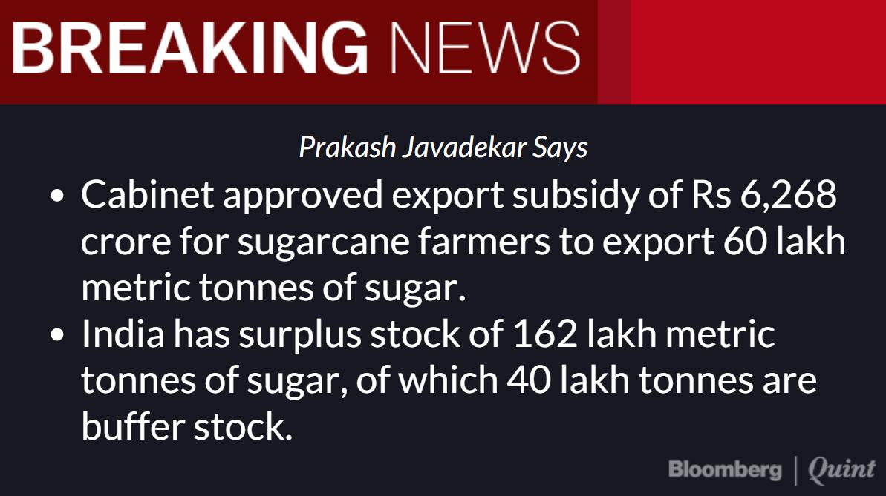
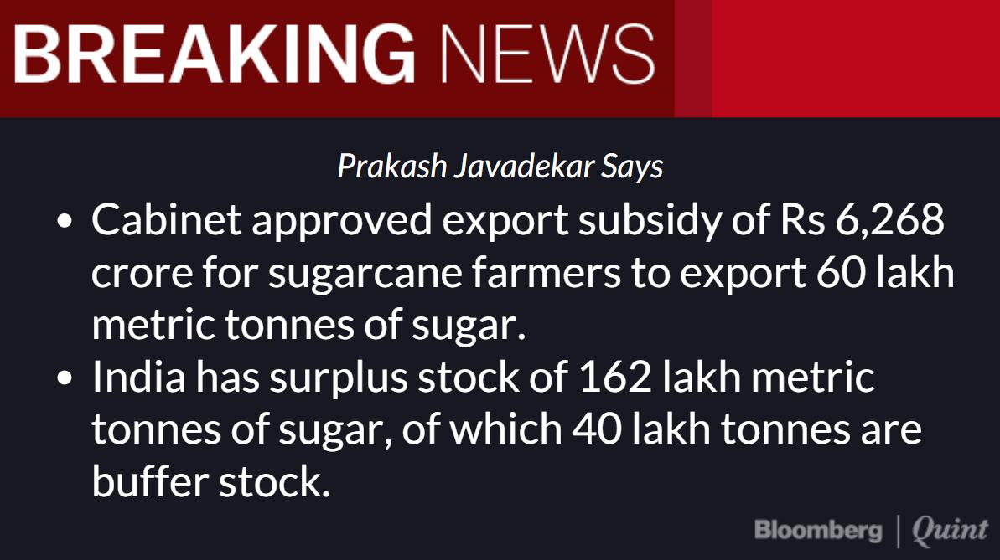

This type of subsidy is not different from others. But its purpose is special. When a farmer or exporter sells agricultural products in foreign market, he earns money for himself, as well as foreign exchange for the country. Therefore, agricultural exports are generally encouraged as long as these do not harm the domestic economy. Subsides provided to encourage exports are referred as export subsidies.
There are basically five types of export finance.
Pre-shipment export finance
Post shipment export finance
Export finance against collection of bills.
Deferred export finance
Export finance against allowances and subsidies.
Number of institutions have not only emerged in providing export finance but even the existing institutions have opened up various avenues in granting export finance. The institutions are:
Export Import bank
Commercial banks, both nationalized and non-nationalized
Development banks such as IDBI, ICICI, etc.
Small Industries Development Bank of India
State Finance Corporations
National Small Industries Corporation
Export Credit Guarantee Corporation.